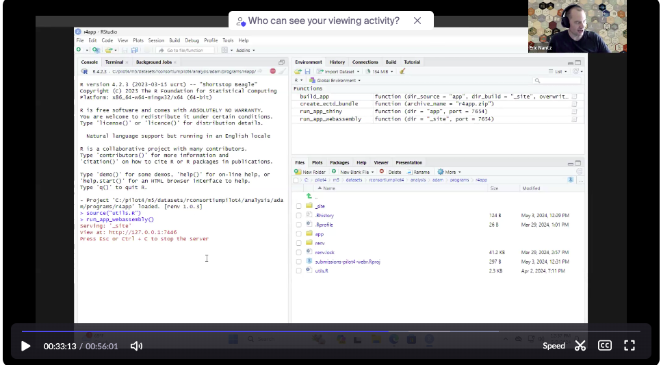

View Attendee List
- Eric Nantz (Eli Lilly)
- Heidi Curinckx (Johnson & Johnson)
- HyeSoo Cho (FDA)
- Jizu Zhi (FDA)
- Joel Laxamana (Roche/Genentech)
- Joseph Rickert (R Consortium)
- Nan Xiao (Merck)
- Ning Leng (Roche/Genentech)
- Paul Schuette (FDA)
- Robert Devine (Johnson & Johnson)
- Sam Parmar (Pfizer)
- Lovemore Gakava
- Youn Kyeong Chang
The meeting was recorded and the video is available
Discussion of Recently Revealed R Vulnerability
- The working group spent a few moments discussing the recently raveled vulnerability in R as reported in Dark Reading and other online sites and discussed in this infosec exchange.
- The working group that the incident highlights the need for caution in accepting serialized objects just as one ought to be careful about clicking on any link from an untrusted source.
- It was noted that our pilot submissions do not directly transmit data sets.
- JBR noted that he has heard the R Foundation is working on an official statement about the incident and that the R Consortium will draw attention to it when it is available.
- The working group agreed that the incident should be viewed as an “overdue wake up call” and.
- JBR suggested that this might we a good time to see if we could attract R users with security expertise to the R Consortium.
- Eric suggested Bob Rudis and and posted this link to a relevant post.
Action: JBR to investigate the possibility of a security focused working group.
Pilot 3
- Pilot 3 was resubmitted on April 19, 2024 under BLA application number 111111 sequence 0007
- HyeSoo confirmed receipt by the FDA and performed a preliminary analysis.
- HyeSoo’s update begins at 10 minutes, 30 seconds into the video
- Her initial check did not reveal any major issues, but she did have a few minor issues mostly relating to the zip file and file names.
- HyeSoo shared two solutions to the error depicted in the screen capture below.
 * There was also an inconsistency with a file name in the submission and the name in the ADRG. * A solution might be to rename the file after submission. * The FDA target date to wrap up the review is early July. * This would enable Ning to include the news the the useR! presentation.
* There was also an inconsistency with a file name in the submission and the name in the ADRG. * A solution might be to rename the file after submission. * The FDA target date to wrap up the review is early July. * This would enable Ning to include the news the the useR! presentation.
Pilot 4
- Eric Nantz begins presenting his update on Pilot 4 at 32:35 into the video.
- The ADRG for Pilot 4 which is almost complete.
- The following screen capture shows the commands starting wasm in Eric’s Windows VM.

- The 10GB threshold on etcd gateway mostly to guarantee transfer on first try.
- Pilot 4 transfer is approximately 800 MB
- Decision mate to try two ways of building wasm app
- Prebuilt before transfer
- Built by FDA after transfer
- Specified versions of R and RStudio IDE need to be pre-installed.
- The target for submission is late June or early July after HyeSoo has sent her evaluation of Pilot 3 off for document clearance
- It might be possible to also submit the docker version of Pilot 4
- Paul will investigate whether docker desktop or docker runtime is possible or preferable.
ADRG Standard
- There is a proposal that the RC investigate setting up a working group for drafting an ADRG standard for R.
- We will open up an issue o the submissions-wg repository to capture ideas members may want to contribute and then discuss the proposal at our next meeting.
Recording Chat File Contents
- 00:08:01 Sam Parmar: Reacted to ‚Äúhttps://infosec.exch‚Ķ‚Äù with üëçüèΩ
- 00:10:01 Eric Nantz: This is another balanced take https://aitap.github.io/2024/05/02/unserialize.html
- 00:10:06 Sam Parmar: Reacted to ‚ÄúThis is another bala‚Ķ‚Äù with üëçüèΩ
- 00:11:44 Sam Parmar: The Python pickle modules has a very similar situation. https://docs.python.org/3/library/pickle.html
- 00:12:04 Sam Parmar: That blog post Eric linked mentions it.
- 00:17:11 Eric Nantz: https://rud.is/b/2024/05/03/cve-2024-27322-should-never-have-been-assigned-and-r-data-files-are-still-super-risky-even-in-r-4-4-0/
- 00:17:15 Sam Parmar: Reacted to ‚Äúhttps://rud.is/b/202‚Ķ‚Äù with üëçüèΩ
- 00:33:52 laxamanj: See Note from Pilot 1 submission : https://github.com/RConsortium/submissions-pilot1-to-fda/blob/main/m1/us/report-tlf.pdf
- 00:40:28 Eric Nantz: Pilot 4 Readme: https://github.com/RConsortium/submissions-pilot4-webR
- Preview version of the Pilot 4 Analysis Data Reviewer Guide (ADRG):
- HTML Format: https://rpodcast.quarto.pub/pilot4-webassembly-adrg/
- PDF Format: https://rsubmission-draft.us-east-1.linodeobjects.com/adrg-quarto-pdf.pdf
- 00:52:13 Sam Parmar: Hi Eric. Did we run mention this issue? https://github.com/RConsortium/submissions-pilot4/issues/5
Next Meeting
The next meeting of the working group will be at 9AM Pacific Time on Friday June 7, 2024.